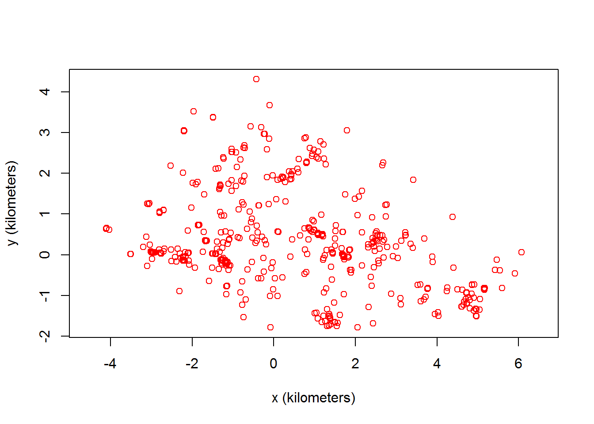
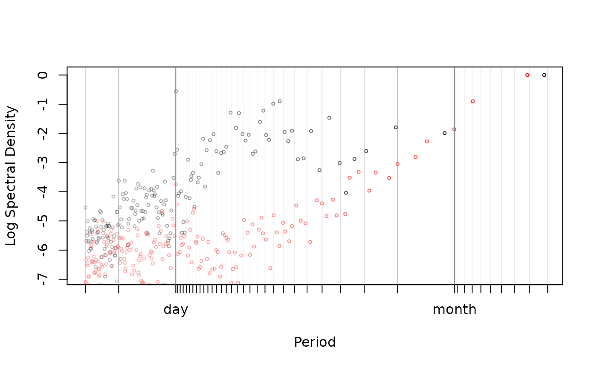
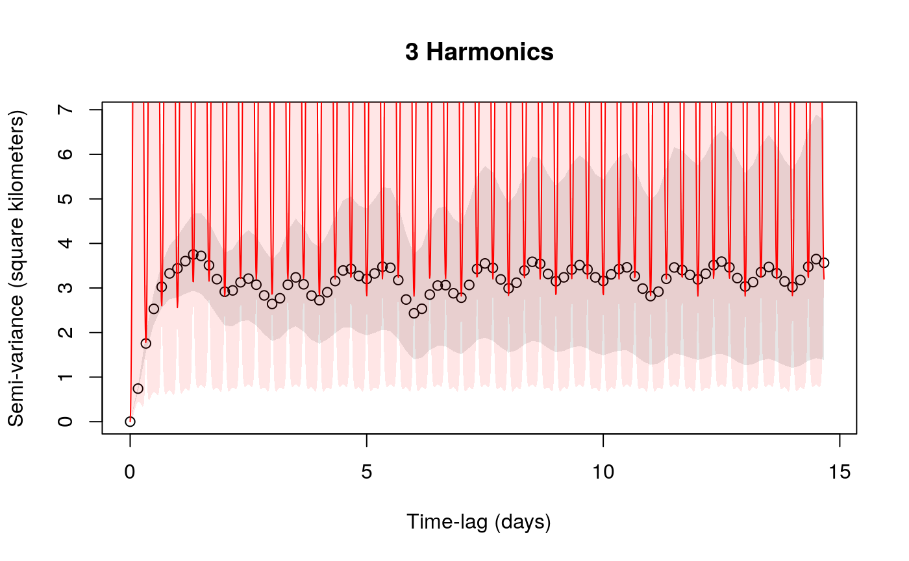
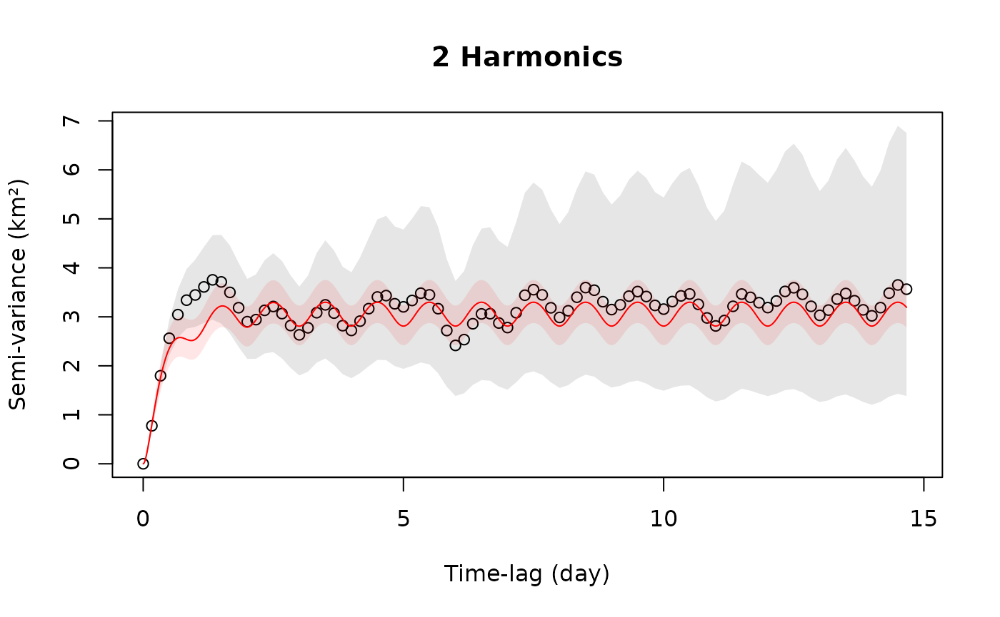

vignettes/periodogram.Rmd
periodogram.RmdIn this vignette, we walk through periodogram for movement data and periodic movement model fitting and selection. It is assumed that you are already familiar with data preparation with ctmm, as well as the maximum likelihood procedure described in the variogram vignette. Our example maned wolf data is already prepared into a telemetry object.
## The legacy packages maptools, rgdal, and rgeos, underpinning the sp package,
## which was just loaded, will retire in October 2023.
## Please refer to R-spatial evolution reports for details, especially
## https://r-spatial.org/r/2023/05/15/evolution4.html.
## It may be desirable to make the sf package available;
## package maintainers should consider adding sf to Suggests:.
## The sp package is now running under evolution status 2
## (status 2 uses the sf package in place of rgdal)## DOP values missing. Assuming DOP=1.
Before anything else, we want to plot the data in a way that makes periodic patterns apparent. This is the periodogram.
LSP <- periodogram(Gamba,fast=2,res.time=2)The fast=2 option requests the use of the (much) faster FFT-based algorithm and furthermore samples a highly composite number of times. Set the argument to FALSE to revert to Scargle’s original algorithm, which involves fewer numerical approximations. The res.time argument increases the resolution of the temporal grid when fast>0. The algorithm defaults to adequate resolution for regularly scheduled data (permitting gaps), while variable sampling rates require res.time>1 to resolve the fine scale spectrum correctly.
plot(LSP,max=TRUE,diagnostic=TRUE,cex=0.5)
The max=TRUE option keeps only local maxima and often yields periodograms that are easier to interpret, especially when the resolution of the periodogram has been increased from the default.
Periodicities in the data cause peaks at their respective periods on the horizontal axis. To visually assess significance, these peaks should be compared to the normal variation around the smooth trend of the periodogram. Important natural periods like the stellar day, synodic month and tropical year are labeled on the horizontal axes and given dark vertical lines in the plot. Harmonics of these natural periods have unlabeled tick marks on the horizontal axis and are are given lighter vertical lines in the plot. E.g., the two tick marks under a day represent the second and third harmonic of the day, or (24/2) 12 hours and (24/3) 8 hours, respectively Peaks at the harmonics of a period indicate that fine details of the periodicity are resolved by the data.
The diagnostic=TRUE option draws the periodogram of the sampling schedule with red symbols. If the periodogram of the sampling schedule exhibits peaks, this indicates that the corresponding peaks in the movement data could be simply caused by irregularities in the sampling schedule and not by periodicity in the movement. Here the periodogram exhibits a clear peak for the period of one day, but this is also present in the (red) diagnostic.
Periodograms are a great data exploration tool, but they do not detect everything. In particular circulation processes, those that induce circulatory patterns via a stochastic rotational effect, are often not visible in periodograms. Periodograms are also difficult to compare from one individual to the next, if the aperiodic stochastic movements of these individuals are not the same.
Circulatory patterns can be incorporated into stochastic continuous time movement models in two ways: via the mean of the process, modelling that the animal reverts to a point that moves periodically through time, or via the stochastic component, by including a rotation effect. The first is called a periodic-mean process, and the second is called a circulation process.
For periodic-mean processes, you need to specify one or more period values that you want ctmm to consider.
In our example, we are going to specify a period of a day, which is what the periodogram was saying. Other individuals in this population were also exhibiting a weekly periodicity, and in similar species, lunar cycles are well-known to affect ranging behaviors.
The mean="periodic" option tells ctmm that you want a periodic-mean process. The default is mean="stationary". The period values are all specified in seconds (SI unit) by the %#% function (see help("%#%") for more information).
The circle=TRUE option tells ctmm that you want to try and fit a model in which there is stochastic circulation on top of the periodicity in the process mean. For circulation processes, you do not need to specify candidate period values. The period of the circulation is estimated from the data.
As with other uses of ctmm, the next step is to generate an initial guess of the parameter values to feed to the likelihood optimization routine. You can do this using your intuition, by visually examining the variogram, or by letting ctmm do it for you.
SVF <- variogram(Gamba,res=3)
GUESS <- ctmm.guess(Gamba,PROTO,variogram=SVF,interactive=FALSE)ctmm.guess is a generalization of variogram.fit that can estimate other quantites from the data that are not apparent in the variogram, such as the circulation period and location correlations. A variogram argument is not necessary, but here we used the res option to increase the FFT variogram’s temporal resolution and counteract sampling variability. The interactive argument works just as with variogram.fit.
Potentially, the most complex model based on our prototype could have both circulation and multiple harmonics of daily periodicity. In addition, we also do not know whether the velocities are autocorrelated in time (OUF model) and whether the animal moves amounts in different directions (anisotropy). All of this makes for a large number of effects. Forcing all these effects upon data that do not support them would inflate the risk of overfitting or convergence issues. We thereby conduct a model selection.
# CRAN policy limits to 2 processes (cores)
FITS <- ctmm.select(Gamba,GUESS,verbose=TRUE,cores=2)## Nyquist frequency estimated at harmonic 3 88.5917638888889 of the period.
# if you get errors on your platform, then try cores=1With verbose=TRUE, we obtain a list fitted ctmm objects, one for each relevant combination of effects, where the first element of that list is the preferred model.
summary(FITS)## ΔAICc ΔRMSPE (m) DOF[area]
## OUF anisotropic harmonic 2 0 0.000000 60.815820 175.8871
## OUF anisotropic harmonic 1 0 20.689425 63.785894 179.2759
## OUF anisotropic harmonic 2 1 5.493885 89.639598 169.4066
## OUF anisotropic harmonic 1 1 26.103584 91.796920 172.8667
## OUF anisotropic harmonic 0 0 123.673098 157.298531 205.5584
## OUF anisotropic harmonic 0 1 128.448440 177.809091 200.7891
## OUF anisotropic harmonic 3 0 -17.231893 2496.228990 174.7865
## OUf anisotropic harmonic 2 0 19.477244 0.000000 237.2510
## OUf anisotropic harmonic 1 0 39.906174 5.147749 240.7653
## OUf anisotropic harmonic 0 0 124.354647 131.232070 233.3833
## OU anisotropic harmonic 2 0 34.440063 67.757511 146.6522
## OU anisotropic harmonic 1 0 51.739611 69.857170 150.1455
## OU anisotropic harmonic 0 0 193.520195 177.510806 163.4152
## OUF harmonic 2 0 88.869590 236.982414 163.4619
## OUF harmonic 1 0 113.063969 238.575576 166.0153
## OUF harmonic 0 0 230.160697 323.668046 196.4267
## OUF anisotropic circulation harmonic 0 0 124.411899 157.179435 205.5748
## OUF circulation harmonic 0 0 231.126333 323.504989 196.4744From the first model, We see that the velocity autocorrelation (OUF), anisotropy, and 2 harmonics of daily periodicity were all selected. Given how we specified the prototype, harmonic 2 0 means that this preferred model has no lunar periodicity, but has two harmonics of the one-day periodicity. This fittingly corresponds to what the periodogram was saying. If there was some moon-related pattern of space use and given how we specified our prototype, we would have had a non-zero value as the second harmonic value.
The sorting of our candidate models is more complex than in previous stationary examples. For a given autocovariance model, the different non-stationary models are sorted by mean square predictive error (MSPE) and not the information criterion. As we will demonstrate, likelihood-based model selection can badly overfit with these types of models. For sorting between the autocovariance models (each with best non-stationary model), the information criterion is used. MSPE is not valid for general purpose selection.
## ΔAICc ΔRMSPE (m) DOF[area]
## OUF anisotropic harmonic 2 0 0.000000 0.000000 175.8871
## OUF anisotropic harmonic 1 0 20.689425 2.970074 179.2759
## OUF anisotropic harmonic 2 1 5.493885 28.823778 169.4066
## OUF anisotropic harmonic 1 1 26.103584 30.981099 172.8667
## OUF anisotropic harmonic 0 0 123.673098 96.482711 205.5584
## OUF anisotropic harmonic 0 1 128.448440 116.993271 200.7891
## OUF anisotropic harmonic 3 0 -17.231893 2435.413170 174.7865## ΔAICc ΔRMSPE (m) DOF[area]
## OUF anisotropic harmonic 0 0 0.0000000 26.06646 205.5584
## OUf anisotropic harmonic 0 0 0.6815491 0.00000 233.3833
## OUF anisotropic circulation harmonic 0 0 0.7388015 25.94736 205.5748
## OU anisotropic harmonic 0 0 69.8470970 46.27874 163.4152
## OUF harmonic 0 0 106.4875996 192.43598 196.4267
## OUF circulation harmonic 0 0 107.4532353 192.27292 196.4744If only the information criterion was used, we would have selected harmonic 3 0 over harmonic 2 0.
# sorting by IC only
summary(FITS,MSPE=NA)## ΔAICc DOF[mean]
## OUF anisotropic harmonic 3 0 0.00000 106.67983
## OUF anisotropic harmonic 2 0 17.23189 105.76775
## OUF anisotropic harmonic 2 1 22.72578 103.79740
## OUf anisotropic harmonic 2 0 36.70914 149.25890
## OUF anisotropic harmonic 1 0 37.92132 107.66572
## OUF anisotropic harmonic 1 1 43.33548 105.71558
## OU anisotropic harmonic 2 0 51.67196 79.90435
## OUf anisotropic harmonic 1 0 57.13807 151.46287
## OU anisotropic harmonic 1 0 68.97150 81.79362
## OUF harmonic 2 0 106.10148 93.38189
## OUF harmonic 1 0 130.29586 94.69244
## OUF anisotropic harmonic 0 0 140.90499 131.12270
## OUf anisotropic harmonic 0 0 141.58654 149.16251
## OUF anisotropic circulation harmonic 0 0 141.64379 131.61504
## OUF anisotropic harmonic 0 1 145.68033 129.27965
## OU anisotropic harmonic 0 0 210.75209 88.86910
## OUF harmonic 0 0 247.39259 119.70643
## OUF circulation harmonic 0 0 248.35823 120.85056Next we do some sanity checking on our results. The sampling interval for Gamba is fairly steady at
## [1] 44 hours, which (ideally) corresponds to a Nyquist period of 8 (2 \(\times\) 4) hours, or 3 (24/8) times per day, or 3 harmonics of the day. The Nyquist period/frequency is an information limit on discretely sampled data. We expect to be able to extract a maximum of 3 harmonics from uniformly sampled data. Therefore, we should limit our consideration to harmonics of the day \(\leq\) 3, while for lower quality data, we might have to limit our consideration even further.
Consistent with these considerations, let us look at harmonics 3 and 2 of the day.
## $name
## [1] "OUF anisotropic harmonic 3 0"
##
## $DOF
## mean area diffusion speed
## 106.6798345 174.7864584 300.0860949 0.8479798
##
## $CI
## low est high
## rotation/deviation % 76.020873 91.679710 100.00000
## rotation/speed % 96.760669 98.970180 100.00000
## area (square kilometers) 41.910582 48.890071 56.39920
## τ[position] (hours) 7.164492 9.335749 12.16502
## τ[velocity] (hours) 1.146721 1.599096 2.22993
## speed (kilometers/day) 14.196484 118.595252 236.08781
## diffusion (square kilometers/day) 8.953754 10.059875 11.22948
summary(FITS[[1]]) # harmonic 2 0 # selected by IC/MSPE## $name
## [1] "OUF anisotropic harmonic 2 0"
##
## $DOF
## mean area diffusion speed
## 105.7677 175.8871 304.7656 139.8130
##
## $CI
## low est high
## rotation/deviation % 23.965249 28.855685 34.744081
## rotation/speed % 24.777406 29.787735 35.811220
## area (square kilometers) 41.557497 48.453880 55.871898
## τ[position] (hours) 7.431354 9.600382 12.402496
## τ[velocity] (hours) 1.008855 1.428103 2.021579
## speed (kilometers/day) 14.779353 16.114886 17.448969
## diffusion (square kilometers/day) 8.975866 10.075405 11.237554rotation/deviation % corresponds to \(\eta_P \times 100\%\) from the Péron et al (2017). It is interpreted as the proportion of the variance in the animal`s location that is caused by the periodicity in the mean.rotation/speed % corresponds to \(\eta_V \times 100\%\) from the Péron et al (2017). It is interpreted as the proportion of the variance in the animal`s velocity that is caused by the periodicity in the mean.circulation period is the period of the stochastic circulations. On average, the animal re-pass through the same neighborhoods every estimated number of months (or days, or hours, depending on the automated unit specification).Note that, aside from the rotational indices, these two models are largely consistent, and the 3 harmonic model has an extrordinarily uncertain speed estimate. We can get a better idea of what is happening by comparing the variograms.
xlim <- c(0,1/2) %#% "month"
plot(SVF,CTMM=FITS[[SUB]],xlim=xlim)
title("3 Harmonics")
plot(SVF,CTMM=FITS[[1]],xlim=xlim)
title("2 Harmonics")
While the confidence bands encompass the empirical variogram, the 3 harmonic model has clearly overfit in attempting to match the Nyquist period (3/day) with less than ideal data.